O livro-razão do rebanho, mesmo sem sinal
Plataforma web de gestão para pecuária de corte a pasto: saldo por lote e por dono, contagem conferida com o sistema, animais pelo brinco, pesagem, reprodução, custo por arroba e o acerto da parceria com o dono do gado vendo os mesmos números.
Telas reais da plataforma · dados 100% fictícios (Fazenda Santa Clara)
01 · O problema
O número não bate, e ninguém sabe por quê
Caderno e planilha
Nascimento, morte e venda ficam anotados em lugares diferentes, por pessoas diferentes. Na contagem, a diferença aparece e não tem como rastrear.
Gado de terceiro no pasto
Na parceria, o acerto das crias e das despesas vira conversa de "eu acho". O dono do gado não vê nada entre uma visita e outra.
Sem sinal no campo
O registro tem que acontecer no curral e na invernada, onde a internet não chega. Se depender de sinal, fica para depois, e se perde.
02 · Como funciona
Um extrato de banco, só que do rebanho
Livro-razão
Cada nascimento, morte, entrada, saída, transferência ou mudança de categoria é um registro. O saldo de cada lote é a soma deles, por categoria e por dono.
Nada se apaga
Errou? "Desfazer" grava um estorno, e o histórico mostra quem lançou e quando. Isso é garantido no banco de dados, não só na tela.
Funciona sem sinal
Os dados ficam no celular e sobem sozinhos quando a conexão volta. Roda no navegador do Android e do iPhone e se instala na tela de início, sem loja de aplicativo nem hardware novo.
Lote misto, pela marca
No mesmo lote, o gado próprio e o de cada parceiro aparecem separados, pela marca a ferro. Cada dono vê só o que é dele.
03 · No pasto, sem sinal
Registrar leva três toques
A conta mostra o total e os lotes; o lote mostra o saldo por categoria e dono e o histórico. Na morte, a causa é obrigatória. Sem sinal, o registro fica "aguardando envio" e entra no saldo na hora.
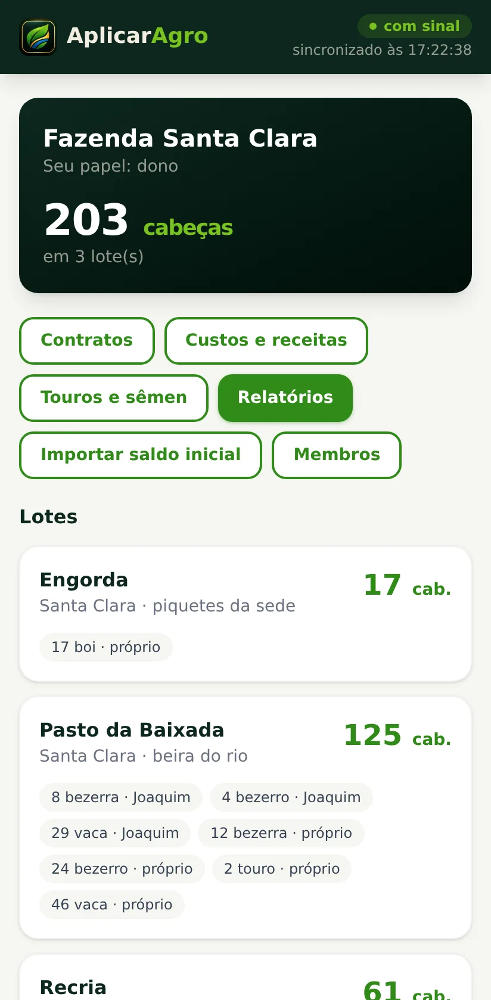
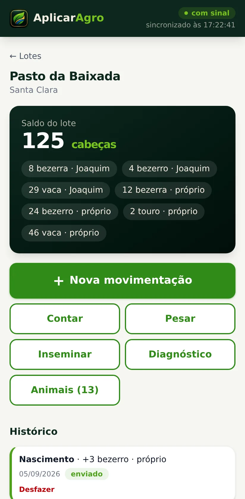
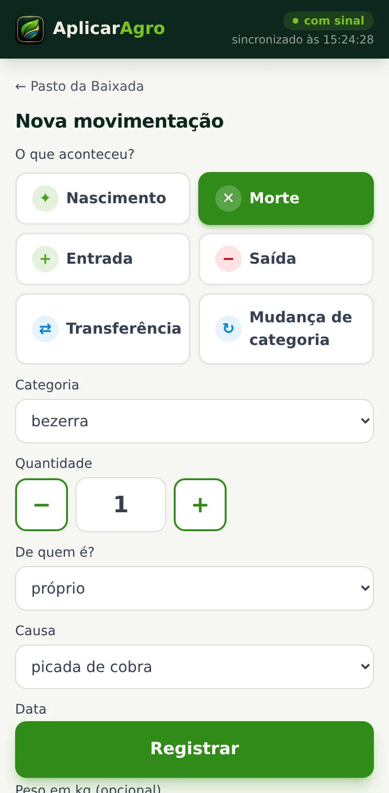
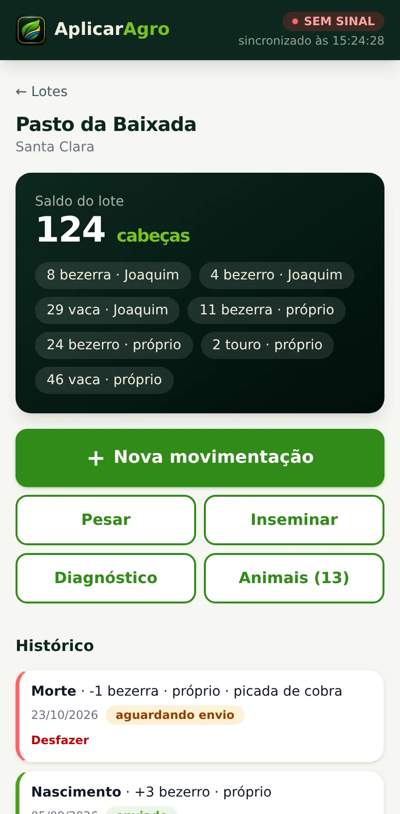
04 · Contagem física
Contado × sistema, e o dono resolve cada diferença
O vaqueiro conta o lote no curral, sem sinal, por categoria e pela marca a ferro. Animal que não dá para saber de quem é entra como "sem marca". A contagem é às cegas: o número do sistema só aparece depois de salvar, para a conta não ser puxada pelo esperado. Aí a tela compara contado × sistema, por categoria e por dono.
- A diferença fica abertaA conta avisa quantas diferenças estão abertas, e o lote mostra cada uma até o dono resolver. Vale a última contagem de cada lote.
- O dono resolve com um registroFaltando: morte não registrada (com a causa) ou sumiço. Sobrando: nascimento ou entrada não registrados. No "sem marca", ele diz de quem é. O ajuste entra no razão ligado à contagem, e desfazer reabre a diferença.
- Recontar não grava nadaA diferença só some com um ajuste ou com uma contagem nova.
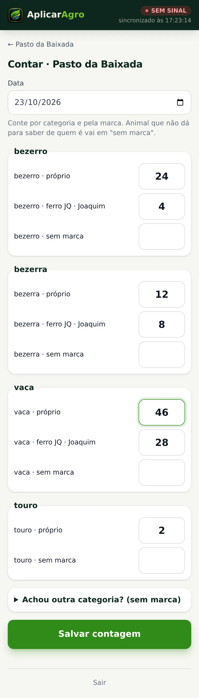
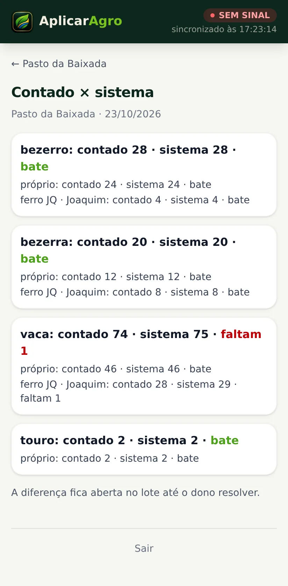
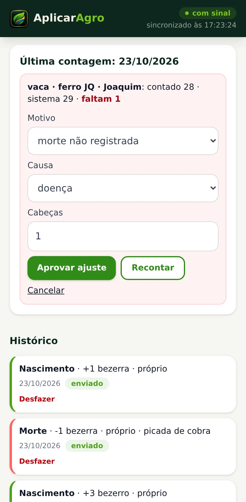
05 · Animais e pesagem
Cada animal pelo brinco, com o ganho de peso
Brinco comum, sem eletrônico. Pesa um animal por vez, em sequência no curral (o campo limpa no toque, pronto para o próximo), ou o lote inteiro: cabeças e peso total. Também funciona sem sinal. A ficha mostra peso atual, ganho, kg/dia e a evolução.
- Importar a planilha de brincosO dono ou o gerente cola as células do Excel ou envia um CSV. A prévia mostra o que entra, os brincos repetidos e as linhas com erro, que ficam de fora. O cadastro não mexe no saldo do lote.
- Mover de loteMarca os animais pelo brinco, escolhe o lote e confere o resumo. A transferência entra junto no razão e o saldo dos dois lotes muda. O vaqueiro também move, mesmo sem sinal.
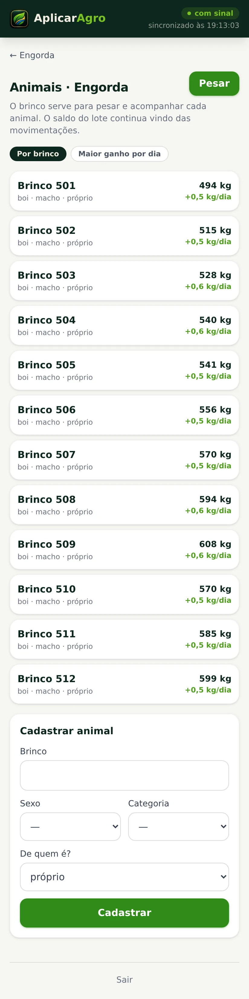
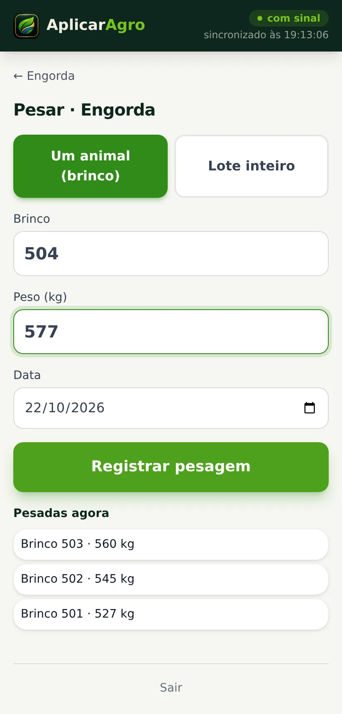
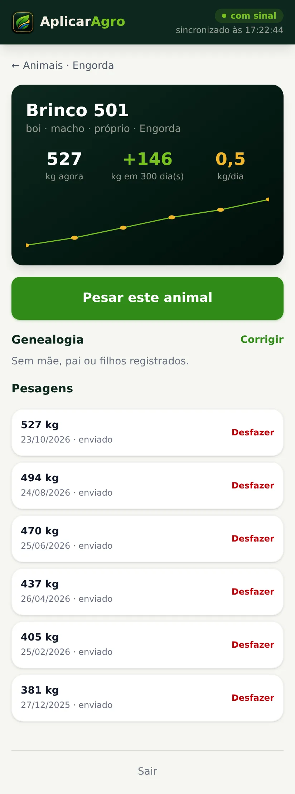
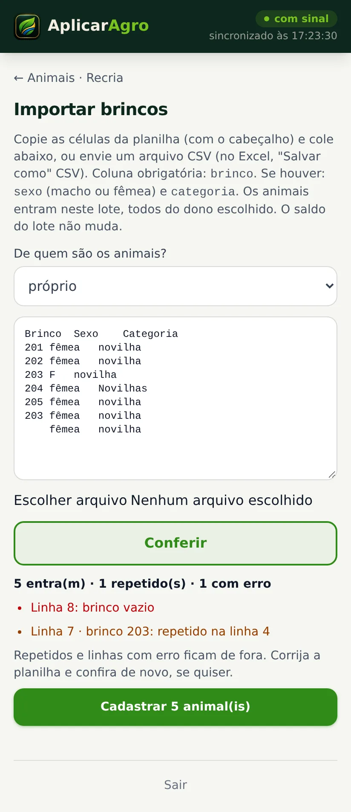
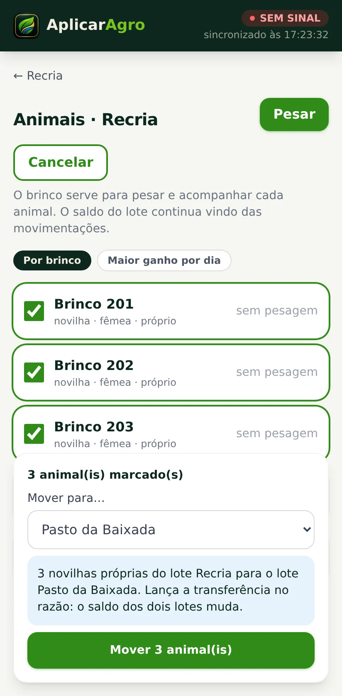
06 · Reprodução
Inseminação e diagnóstico no curral, pelo brinco
O dono ou o gerente cadastra o sêmen em palheta ou o touro de monta: raça, registro na associação (opcional) e de quem é, da fazenda ou do dono do gado. Entrada e descarte de palhetas ficam lançados, e o estoque desconta sozinho cada inseminação. No curral, o vaqueiro escolhe o touro uma vez e vai pelo brinco, uma vaca atrás da outra, sem sinal. No diagnóstico, a tela lista as vacas aguardando: um toque marca prenhe ou vazia.
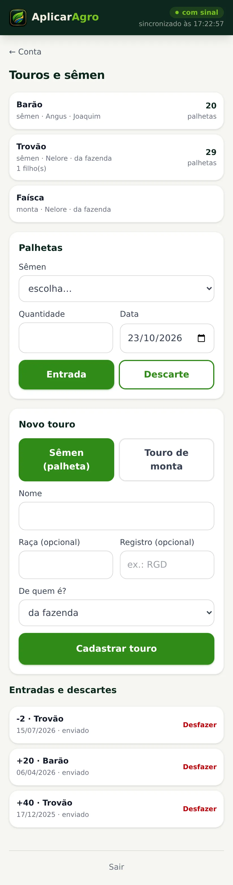
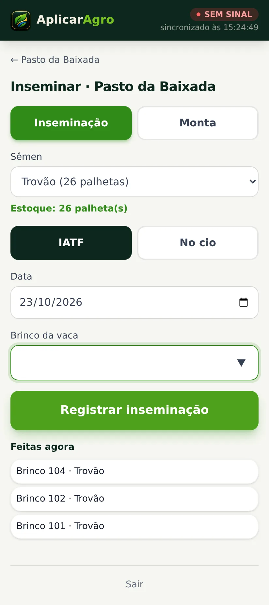
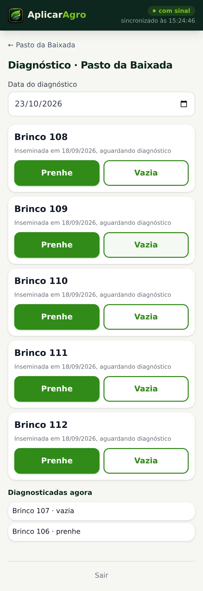
07 · Parto e genealogia
O bezerro já nasce ligado à mãe e ao pai
O parto é registrado na ficha da vaca, sem sinal. A plataforma cria o bezerro ligado à mãe e ao pai e lança o nascimento no razão. A cria nasce do dono da mãe: se a vaca é de um parceiro, a cria entra no contrato dele, para a divisão pelo percentual de crias. O brinco vai na hora do parto ou depois, na desmama, com "Dar brinco".
- Situação da vacaAguardando diagnóstico, prenhe, vazia ou perda, com a linha do tempo e o desfazer. Prenhe mostra o parto previsto, por volta de 290 dias depois da cobertura.
- Genealogia na fichaMãe, pai e filhos. Quando houve inseminação e depois monta de repasse, o pai fica marcado como "provável".
- Dono do gadoVê a reprodução e as crias só das vacas dele.
- Números da reproduçãoNos relatórios: taxa de prenhez por lote e por dono, partos previstos para os próximos 30, 60 e 90 dias, crias esperadas por contrato (uma estimativa, não o acerto) e o ganho de peso dos filhos de cada touro.
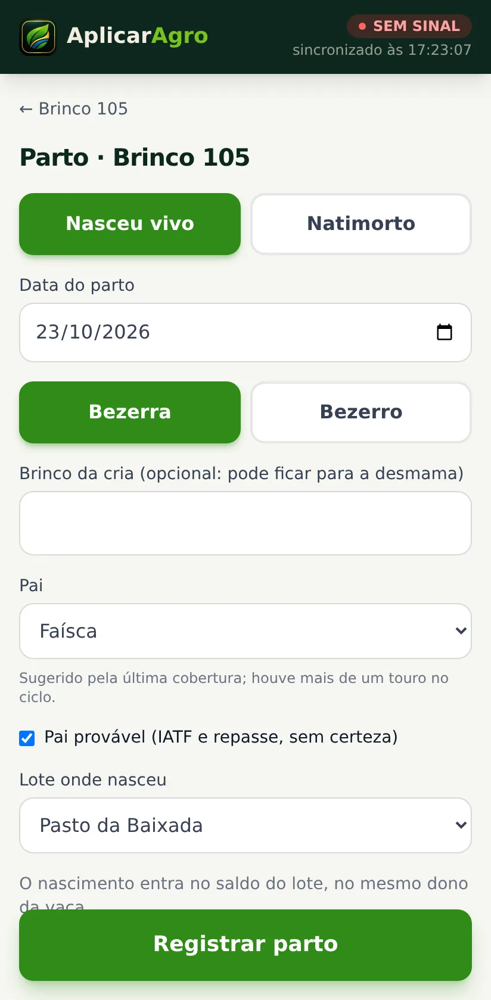
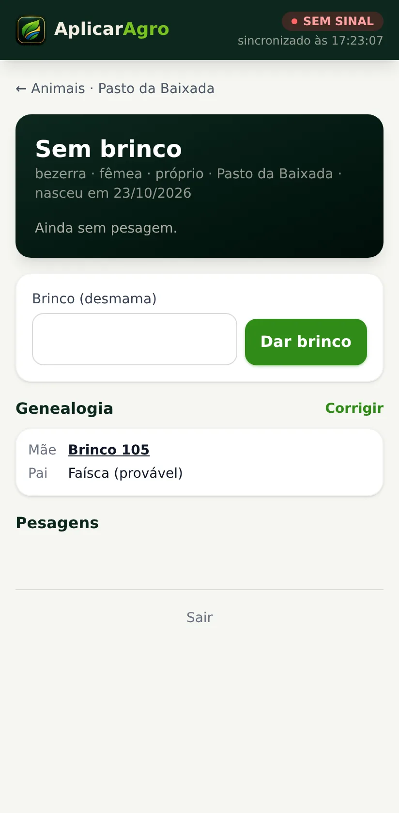
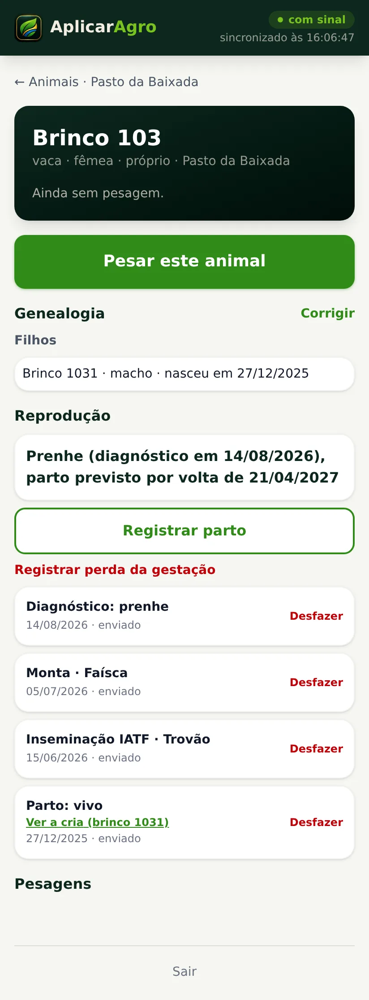
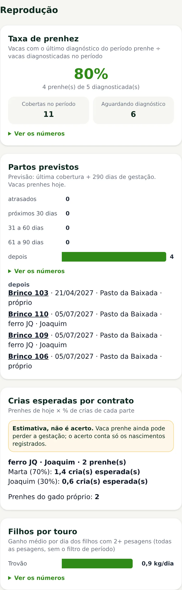
O registro na associação é um campo de anotação. A plataforma não se comunica com associação de raça e não substitui o registro genealógico oficial.
08 · Custos e relatórios
Quanto custa produzir uma arroba
Custos e receitas por categoria (sal mineral, vacina, mão de obra, frete, venda), por lote e por dono, com "quem pagou" para o acerto. Os relatórios filtram por período, dono e lote, e todo gráfico tem a tabela "Ver os números".
Custo por arroba = custos do período ÷ arrobas produzidas
arrobas produzidas = ganho de peso vivo × rendimento de carcaça ÷ 15 kg
Rendimento configurável por fazenda (padrão 50%, ou seja, 30 kg vivos por @). A tela sempre mostra a
conversão usada.
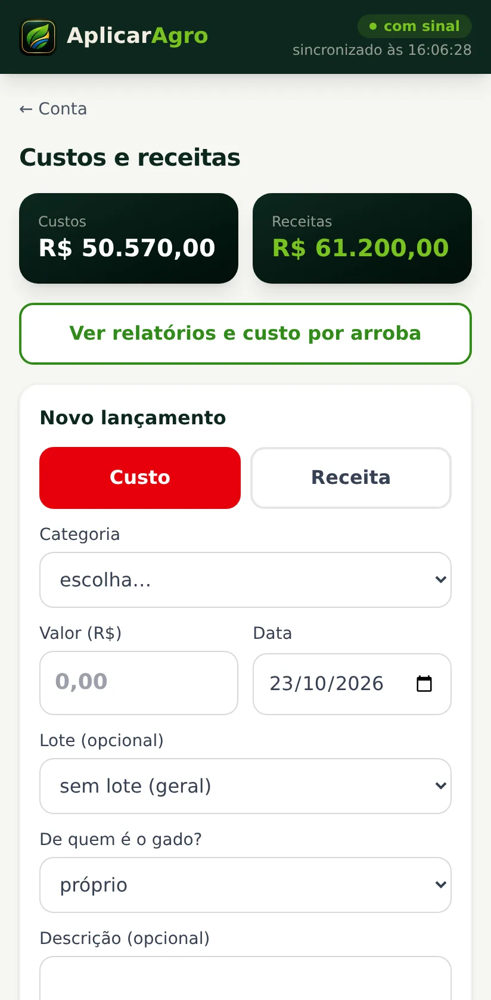
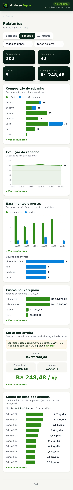
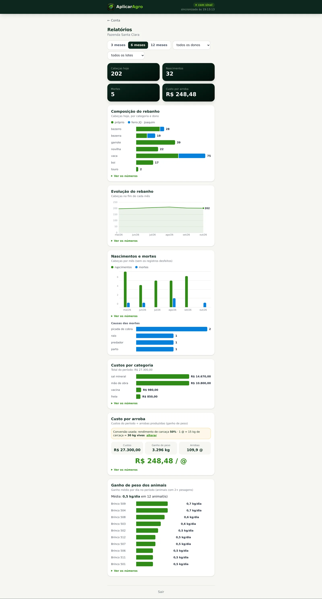
09 · Parceria
O dono do gado vê o gado dele, e só o dele
O contrato guarda a divisão de crias, despesas e receitas (70/30 é o comum). O dono do gado recebe um convite por link ou WhatsApp, entra com o próprio login, confirma ou contesta a entrega inicial, responde ao acerto e acompanha o saldo e os relatórios do contrato dele.
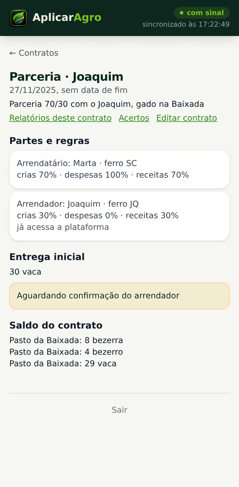
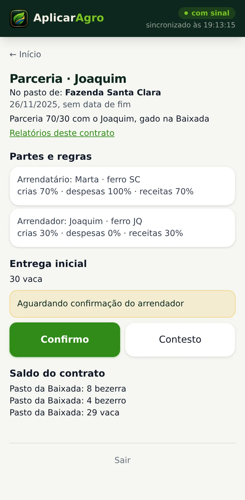
10 · Acerto da parceria
A conta do acerto, com as duas partes vendo o mesmo extrato
No contrato de parceria, o dono do pasto escolhe o período e a plataforma faz a conta com o que foi registrado. Fechado, o extrato congela: o que chegar atrasado entra no próximo acerto. O dono do gado abre o extrato no login dele e toca "Aceito" ou "Contesto", com o motivo.
Crias = nascimentos − mortes de bezerro(a) no período, divididas pelo percentual de cada
parte. Cada uma fica com a parte inteira; o que sobra fica pendente de acordo.
Na Fazenda Santa Clara (fictícia): 12 crias · 70/30 → 8,4 e 3,6 → Marta 8 · Joaquim 3 · 1 pendente
de acordo.
Despesas: quanto cada parte deveria arcar, pelo percentual do contrato, menos quanto pagou.
- Cada número abre os registrosOs nascimentos, as mortes e os custos que formam a conta, com o que chegou atrasado marcado.
- Avisa, não impedeSobra de cria e morte sem acordo ficam no extrato como pendentes. O dono registra depois o acordo (cabeças e R$ por parte), e o dono do gado pode contestá-lo.
- Fechar e responder precisam de sinalO extrato congela o que já chegou ao servidor.
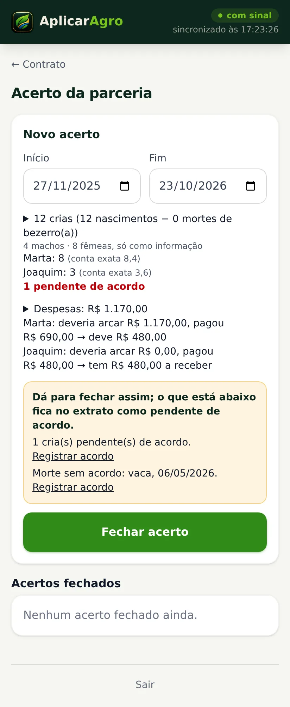
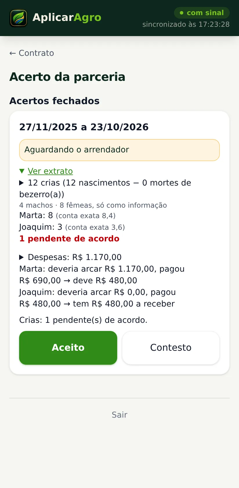
O aceite fica registrado na plataforma. Que valor ele tem num contrato de parceria é pergunta para advogado. A partilha física das crias ainda não está na plataforma.
11 · Quem faz o quê
Quatro perfis, conferidos no servidor
| Perfil | Vê | Faz |
|---|---|---|
| Dono do pasto | Tudo da fazenda | Registra e desfaz, importa o saldo, conta o lote e resolve as diferenças, cria contratos, fecha o acerto e registra o acordo da sobra, convida o dono do gado, convida e remove o gerente e o vaqueiro, responde contestações, lança custos, ajusta o rendimento de carcaça, cadastra touros e o estoque de sêmen |
| Gerente | Tudo da fazenda | Registra e desfaz, conta o lote, cadastra animais (um a um ou pela planilha), pesa e move de lote, cadastra touros e o estoque de sêmen, lança custos, vê relatórios |
| Vaqueiro | Os lotes e o saldo | Registra, conta o lote, pesa, move de lote, insemina, diagnostica e registra o parto, mesmo sem sinal; desfaz só o que ele mesmo registrou |
| Dono do gado | Só o gado, as pesagens, a reprodução e as crias, os custos, os contratos e os acertos dele | Confirma ou contesta a entrega inicial; aceita ou contesta o acerto; não lança movimentação nem custo. Nunca vê o gado próprio da fazenda nem o de outros donos |
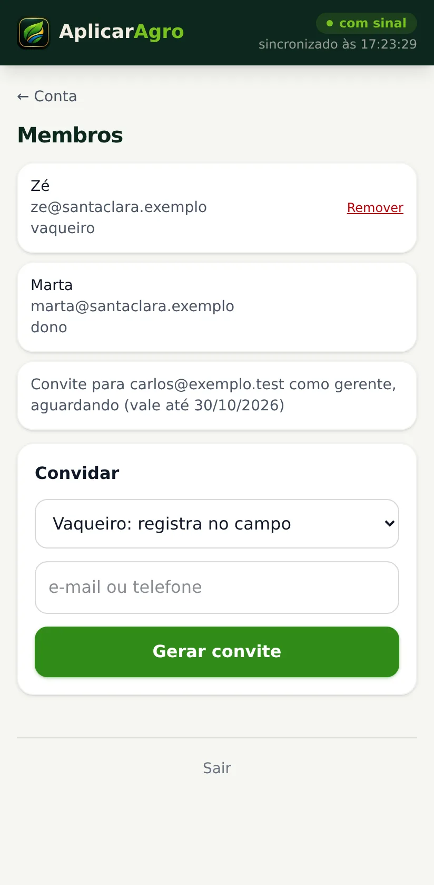
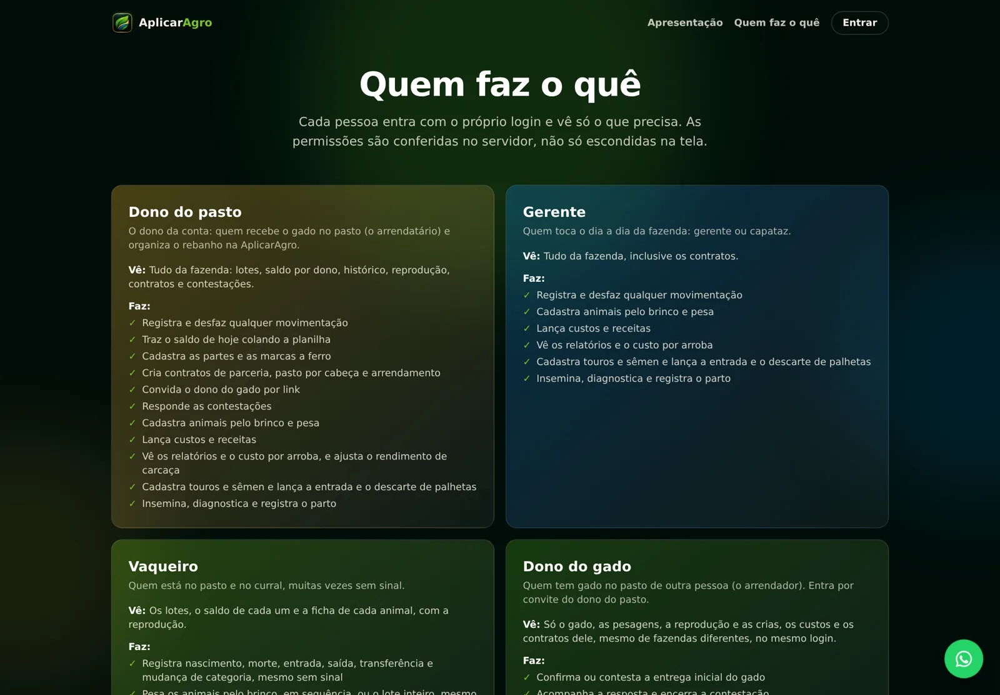
12 · Por baixo do capô
Testado a cada mudança
Banco no celular
Um banco SQLite dentro do navegador guarda tudo e sincroniza com o servidor quando há sinal (PowerSync).
Servidor em São Paulo
Postgres no Supabase (sa-east-1), com regras de acesso linha a linha em todas as tabelas.
Sem duplicar
Cada registro nasce com uma identidade no aparelho: reenviar depois de cair o sinal não lança duas vezes.
13 · Com honestidade
O que ainda não tem
- Partilha física das criasO acerto calcula a parte de cada um, mas a separação das cabeças no fim do contrato ainda não é registrada pela plataforma.
- Cria vendida antes da divisãoAinda não está definido se ela sai da conta das crias ou vira dinheiro no acerto.
- Contestar um ajuste pela telaO dono do gado contesta a entrega inicial, o acerto e o acordo; um ajuste da contagem ou outra movimentação, ainda não.
- Teste no campo de verdadeOs testes automáticos simulam o celular sem sinal e o acesso real pelo iPhone funcionou, mas falta o teste sem sinal num celular, no pasto. Nenhum resultado foi medido em fazenda ainda.
14 · Como avaliar
Onde a opinião de quem é do campo pesa
- CategoriasBezerro, bezerra, garrote, novilha, vaca, boi e touro bastam?
- Causas de morteDoença, parto, picada de cobra, acidente, raio, predador, desconhecida ou outra.
- Rendimento de carcaça50% como padrão faz sentido, ou outro valor é mais justo?
- Custo por arrobaCustos ÷ arrobas produzidas é o jeito certo de olhar? E o custo sem lote (salário, manutenção): rateia ou fica à parte?
- Pesagem no curralPesar um por um digitando o brinco é viável, ou a pesagem do lote resolve?
- ReproduçãoIATF, no cio e monta cobrem o que se faz na fazenda? O brinco do bezerro vai no parto ou na desmama?
- Contagem e acertoContar por categoria e pela marca, sem ver o número do sistema antes, funciona no curral? No acerto, crias = nascimentos − mortes de bezerro(a), com a sobra deixada para acordo: é assim que se acerta a parceria hoje?